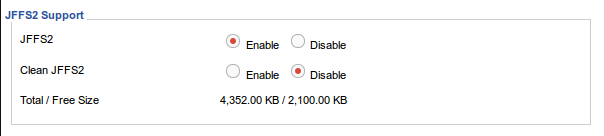

Prepare the router
Download the DD-WRT fireware from dd-wrt.com
Select your router's fireware from here
My router is WRT160N v3. So I downloaded dd-wrt.v24-21061_NEWD-2_K2.6_mini_wrt160nv3.bin.
Flush the fireware to your router. How to flush please follow the DD-WRT wiki.
Enable the JFFS2 support on your router
Open the router's control panel, mostly at http://192.168.1.1; If it is the first time access the control panel, a username and password need to be set. Go to Administration -> Management panel, scroll down to JFFS2 Support.

Make sure you can telnet your router
woic@woic:~/wrt160n$ telnet 192.168.1.1
Trying 192.168.1.1...
Connected to 192.168.1.1.
Escape character is '^]'.
DD-WRT v24-sp2 mini (c) 2013 NewMedia-NET GmbH
Release: 03/25/13 (SVN revision: 21061)
DD-WRT login: root
Password:
==========================================================
____ ___ __ ______ _____ ____ _ _
| _ \| _ \ \ \ / / _ \_ _| __ _|___ \| || |
|| | || ||____\ \ /\ / /| |_) || | \ \ / / __) | || |_
||_| ||_||_____\ V V / | _ < | | \ V / / __/|__ _|
|___/|___/ \_/\_/ |_| \_\|_| \_/ |_____| |_|
DD-WRT v24-sp2
http://www.dd-wrt.com
==========================================================
BusyBox v1.21.0 (2013-03-25 01:58:36 CET) built-in shell (ash)
Enter 'help' for a list of built-in commands.
root@DD-WRT:~#